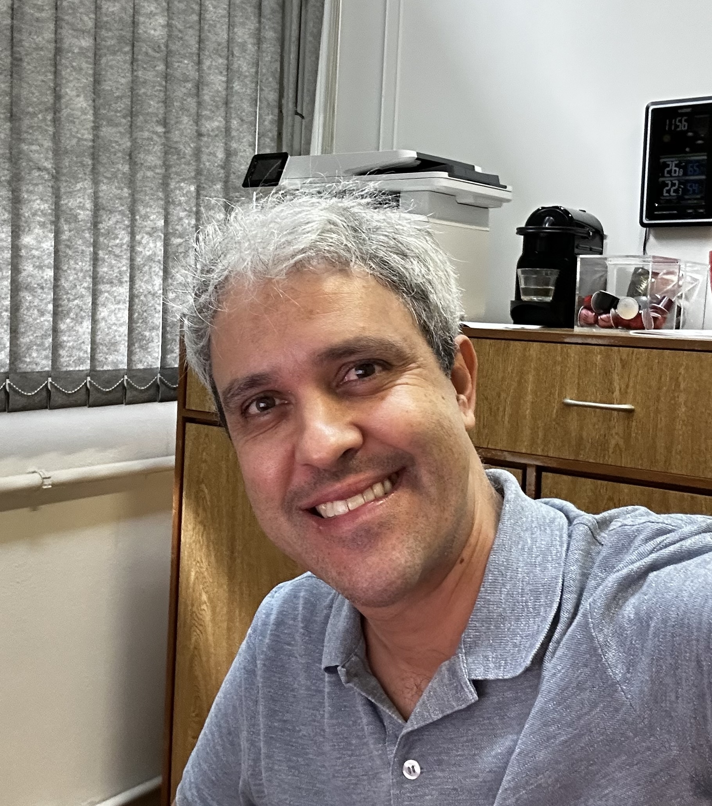

Mechanical Engineering · COPPE/UFRJ
Gustavo R. Anjos
Professor and Computational Scientist
Numerical simulation of single- and two-phase flows, heat transfer and scientific computing.
Research themes
Select a topic to explore related work

Research focus
- Multiphase and two-phase flows
- Heat and mass transfer
- Computational fluid dynamics
- Finite element methods
- Scientific computing in Python and C/C++
Selected research
Selected research
All research
Participation in the 18th International Heat Transfer Conference (IHTC-18)
Funding from PR-6/UFRJ for participation in IHTC-18 in Rio de Janeiro, supporting research, teaching, student supervision and international collaboration in heat transfer and computational fluid mechanics.
Interface Dynamics, Heat and Mass Transfer, and Multiple-Bubble Coalescence in Complex Geometries
Development of a high-order numerical framework for interface dynamics, heat and mass transfer, and multiple-bubble coalescence using moving meshes, semi-Lagrangian schemes, adaptive refinement and variable time stepping.
Multiphase Flow Simulation with Heat and Mass Transfer on Unstructured Meshes
Numerical methods on unstructured meshes for flows with two or more phases and coupled heat and mass transfer, with applications in energy, microreactors and biomechanics.
Academic activity
Publications and supervision
Recent publications
View allA Multiphysics Finite Element Framework for Thermo-Fluid-Structure Interaction Applied to Nonlinear Flexible Fins
anais do 24th IACM Computational Fluids Conference
A higher-order semi-Lagrangian mixed finite element methodology in an arbitrary Lagrangian-Eulerian framework for vortex-induced vibrations of rigid structures
Ocean Engineering
Analytical bounds and finite element modeling of the temperature distribution on a thin plate heated by a localized radiant source
AIMS Mathematics
Numerical analysis of heat and mass transfer in microreactors for biodiesel synthesis
Proceedings of the 18th International Heat Transfer Conference
Analytical and numerical methodology for the temperature distribution on surfaces exposed to a radiant heat source
Proceedings of the 18th International Heat Transfer Conference
Current supervision
View allEduardo Dias Correa
Analytical and Numerical Method for non-Linear Problems in Convection and Radiation Heat Transfer
Antonio Emanuel Marques dos Santos
Numerical Analysis of Two-Phase Flow using the Finite Element Method
Fábio Gaspar Júnior
Immersed Finite-Element Methods for FSI
Gabriel Ricardo Güntensperger Sousa
Numerical Investigation of Droplet Approximation and Coalescence in Biofuel Synthesis
Jorge Angel Aguilera Liendo
Numerical Investigation of Aerodynamics in Pipes
Profile
Profile
Professor at UFRJ/COPPE working on finite-element methods, computational fluid dynamics, heat transfer and single- and two-phase flows.
Current research covers interface dynamics, complex geometries, microchannel cooling, fluid-structure interaction and high-performance scientific software.
Teaching and supervision span undergraduate, MSc, PhD and postdoctoral work in mechanical engineering and computational science.
Based at
Technology Center, G Building, Ilha do Fundao, Rio de Janeiro, Brazil
gustavo.rabello@coppe.ufrj.brResearch network & tools